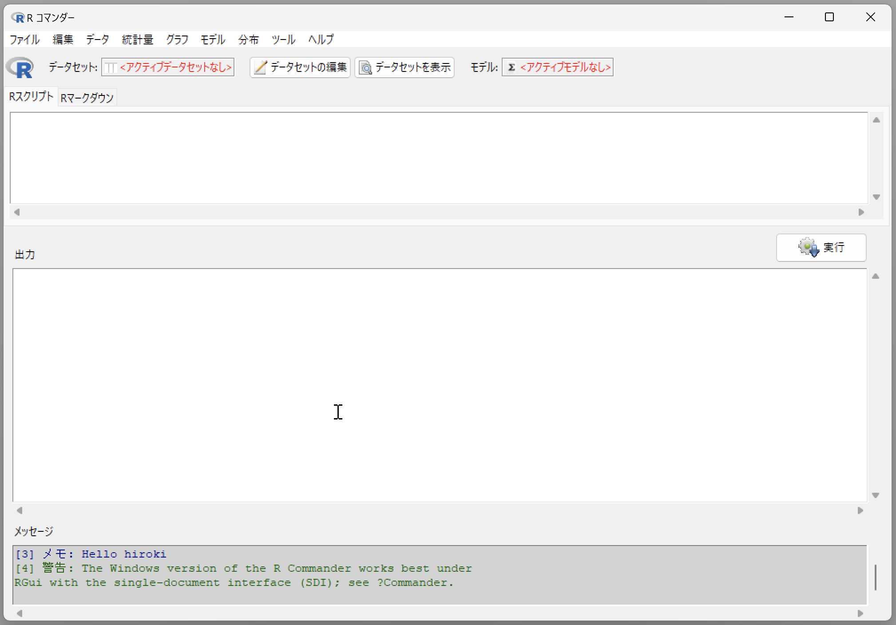
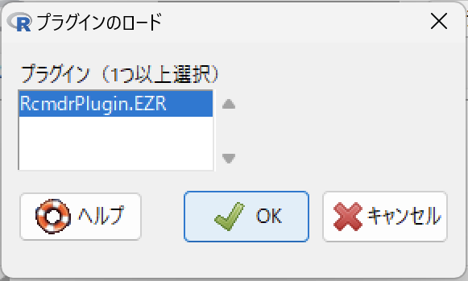

install.packages("Rcmdr")4 R Commander
Rでは、基本的にはスクリプトを作成して解析をおこないます。ただ、どうしてもエディタで文字をタイピングするというのが苦手という方もいらっしゃるでしょう。そのような方のために、GUI環境もあります。
GUI環境としては、jamoviやJASPといった、Rをエンジンとして使うアプリケーションもありますが、ここではR Commanderを紹介します。
4.1 R Commanderのインストール
R CommanderはRのパッケージとして提供されています。Rのコンソールで以下のコマンドを入力することでインストールされます。
なお、macOSでは別にXQuartzのインストールも必要です。Apple Silicon搭載のMacでは、XQuartz 2.8.0でないとエラーが発生します（2025年5月10日現在）。
4.1.1 EZR
EZRは、R Commanderのプラグインです。
自治医科大の
医学関連の解析方法が充実しています。
CRANからもインストールできますが、EZRのウェブサイトでインストーラーが公開されていますので、それを利用してインストールすることもできます。CRANからインストールするときは、RcmdrPlugin.EZRをインストールします。
install.packages("RcmdrPlugin.EZR")4.2 R Commanderの起動
Rのコンソールで、以下のコマンドを入力すると、R Commanderが起動します。初回起動時にはさらにいくつかのパッケージのインストールを求められるかもしれません。
library(Rcmdr)いったんR Commanderを終了した場合（Rは終了せず、R Commanderだけを終了した場合）は、Commander()関数で起動できます。
Commander()4.3 R Commanderの使い方
R Commanderが起動すると 図 4.1 のウィンドウが表示されます。

「データ」メニューから必要なデータを読み込むことができます。データを読み込んだら、グラフを描いたり、仮説検定や、統計モデルへのあてはめができます。こうした解析の過程は「Rスクリプト」のタブに保存されます。また、「ファイル」メニューの「スクリプトを保存…」で保存することもできます（終了時にも保存するか尋ねられます）。解析過程をスクリプトとして保存しておくと、あとで再利用ができます。データに修正があったときなどに完全に同一の解析を繰り返すことができますので、一時的な利用でなければ、保存しておくのが良いでしょう。
また、R Markdown形式での保存も可能です。R Markdownについてはここでは詳しくは触れませんが、もっと知りたい方はR Markdown入門や参考文献(1)などをご覧ください。
4.3.1 EZRの使用
EZRを使用する場合は、EZRプラグインを読み込みます。メニューのツール>Rcmdrプラグインのロード… でRcmdrPlugin.EZRを選択します（図 4.2）。

この後、R Commanderの再起動を求められますので、「はい」を選択して、再起動します。再起動後にはメニューがEZRのものになっており、EZRに搭載された解析機能を使用できるようになります。
4.4 R Commanderの使い方についてもっと知るには
R Commanderについてはこの本ではこれだけで、あまり詳細には触れません。R Commanderを使用した統計解析については参考文献(2)が詳しいので、R Commanderを使用したい方はこちらをご覧ください。